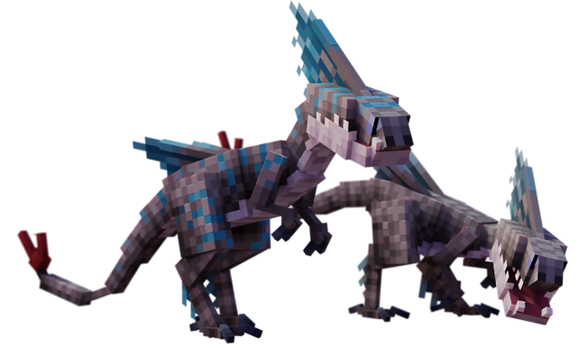
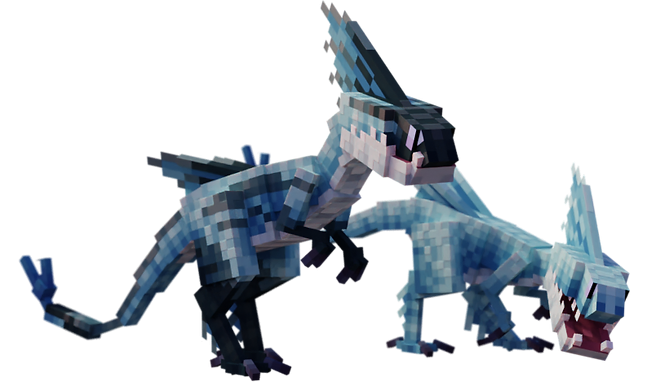
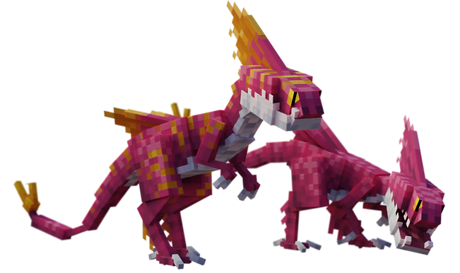

Lead Speed Stinger
alpha de meuteDescription
§ 1Plus grand, plus rare, plus rapide. Coordonne les Speed Stingers en formation d'attaque.
Ne peut pas être apprivoisé. Tuer le Leader retire sa référence des membres — mais les Speed Stingers restants ne fuient pas et restent agressifs. Un seul leader par nid (S30 fix : avant, plusieurs leaders pouvaient apparaître dans la même structure).
Capacités
§ 2Paralyzing Sting (renforcée)
Morsure paralysante de longue durée. Plus de dégâts que les Speed Stingers classiques (8 vs 4). Coordonne aussi les attaques de la meute via son IA d'alpha.
Apprivoisement
§ 3Impossible.
Le Lead Speed Stinger est un alpha — il ne se rallie qu'à sa propre meute. Tenter de le nourrir n'a aucun effet. La seule interaction valide est le combat : tuer le Leader retire son UUID des membres, mais la meute reste agressive.
Habitat
§ 4Mêmes biomes que la meute Speed Stinger. Toujours accompagné de plusieurs membres. Spawn dans les 4 nids sacrés.
Un seul leader par nid (S30 fix).
Trivia
§ 5- Plus grand qu'un Speed Stinger normal — visible immédiatement dans la meute.
- 1 leader par nid uniquement (S30 fix).
- Tuer le Leader retire son UUID des membres — les Speed Stingers restants ne fuient pas et restent agressifs.
- Non apprivoisable — design choice pour préserver la menace des meutes.
Variantes (4)
§ 6
Variant 1
Lead Speed Stinger
Variante de base

Variant 2
Floutscout
Variante nommée

Variant 3
Ice Breaker
Variante nommée

Variant 4
Sweet Stinger
Variante nommée
Commande /summon
§ 7/summon isleofberk:speed_stinger_leader ~ ~ ~